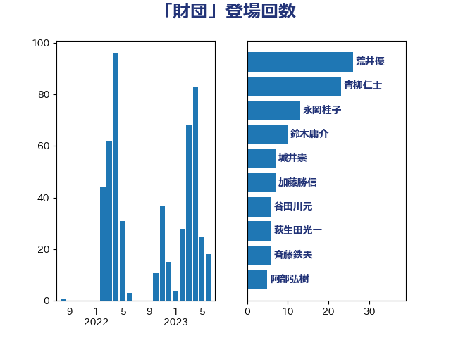

単語「財団」

| 荒井優 | 立憲民主党 | 26 回 |
| 青柳仁士 | 日本維新の会 | 23 回 |
| 永岡桂子 | 自由民主党 | 13 回 |
| 鈴木庸介 | 立憲民主党 | 10 回 |
| 城井崇 | 立憲民主党 | 7 回 |
| 加藤勝信 | 自由民主党 | 7 回 |
| 谷田川元 | 立憲民主党 | 6 回 |
| 萩生田光一 | 自由民主党 | 6 回 |
| 斉藤鉄夫 | 公明党 | 6 回 |
| 阿部弘樹 | 日本維新の会 | 5 回 |
| 鈴木俊一 | 自由民主党 | 5 回 |
| 田村貴昭 | 日本共産党 | 5 回 |
| 小熊慎司 | 立憲民主党 | 5 回 |
| おおつき紅葉 | 立憲民主党 | 5 回 |
| 鶴保庸介 | 自由民主党 | 4 回 |
| 金村龍那 | 日本維新の会 | 4 回 |
| 金子道仁 | 日本維新の会 | 4 回 |
| 足立康史 | 日本維新の会 | 4 回 |
| 田村智子 | 日本共産党 | 4 回 |
| 田中健 | 国民民主党 | 4 回 |
| 湯原俊二 | 立憲民主党 | 4 回 |
| 橋本岳 | 自由民主党 | 4 回 |
| 林芳正 | 自由民主党 | 4 回 |
| 東徹 | 日本維新の会 | 4 回 |
| 宮沢洋一 | 自由民主党 | 4 回 |
| 堀場幸子 | 日本維新の会 | 4 回 |
| 齋藤健 | 自由民主党 | 3 回 |
| 高木宏壽 | 自由民主党 | 3 回 |
| 音喜多駿 | 日本維新の会 | 3 回 |
| 遠藤良太 | 日本維新の会 | 3 回 |
| 緒方林太郎 | 無所属 | 3 回 |
| 田島麻衣子 | 立憲民主党 | 3 回 |
| 猪口邦子 | 自由民主党 | 3 回 |
| 松沢成文 | 日本維新の会 | 3 回 |
| 杉田水脈 | 自由民主党 | 3 回 |
| 打越さく良 | 立憲民主党 | 3 回 |
| 山本順三 | 自由民主党 | 3 回 |
| 塩田博昭 | 公明党 | 3 回 |
| 吉川沙織 | 立憲民主党 | 3 回 |
| 高橋光男 | 公明党 | 2 回 |
| 青木一彦 | 自由民主党 | 2 回 |
| 青山大人 | 立憲民主党 | 2 回 |
| 谷合正明 | 公明党 | 2 回 |
| 西岡秀子 | 国民民主党 | 2 回 |
| 舩後靖彦 | れいわ新選組 | 2 回 |
| 穀田恵二 | 日本共産党 | 2 回 |
| 福島伸享 | 無所属 | 2 回 |
| 玄葉光一郎 | 立憲民主党 | 2 回 |
| 津島淳 | 自由民主党 | 2 回 |
| 松原仁 | 立憲民主党 | 2 回 |
| 杉本和巳 | 日本維新の会 | 2 回 |
| 市村浩一郎 | 日本維新の会 | 2 回 |
| 川合孝典 | 国民民主党 | 2 回 |
| 岸真紀子 | 立憲民主党 | 2 回 |
| 宮本岳志 | 日本共産党 | 2 回 |
| 奥下剛光 | 日本維新の会 | 2 回 |
| 大口善徳 | 公明党 | 2 回 |
| 和田有一朗 | 日本維新の会 | 2 回 |
| 吉良よし子 | 日本共産党 | 2 回 |
| 吉川元 | 立憲民主党 | 2 回 |
| 中山展宏 | 自由民主党 | 2 回 |
| 三上えり | 立憲民主党 | 2 回 |
| 黄川田仁志 | 自由民主党 | 1 回 |
| 高良鉄美 | 無所属 | 1 回 |
| 青木愛 | 立憲民主党 | 1 回 |
| 鈴木隼人 | 自由民主党 | 1 回 |
| 金子俊平 | 自由民主党 | 1 回 |
| 金城泰邦 | 公明党 | 1 回 |
| 酒井庸行 | 自由民主党 | 1 回 |
| 道下大樹 | 立憲民主党 | 1 回 |
| 輿水恵一 | 公明党 | 1 回 |
| 角田秀穂 | 公明党 | 1 回 |
| 西田実仁 | 公明党 | 1 回 |
| 西村智奈美 | 立憲民主党 | 1 回 |
| 西村康稔 | 自由民主党 | 1 回 |
| 菊田真紀子 | 立憲民主党 | 1 回 |
| 若林健太 | 自由民主党 | 1 回 |
| 臼井正一 | 自由民主党 | 1 回 |
| 羽田次郎 | 立憲民主党 | 1 回 |
| 紙智子 | 日本共産党 | 1 回 |
| 竹内譲 | 公明党 | 1 回 |
| 福重隆浩 | 公明党 | 1 回 |
| 福田昭夫 | 立憲民主党 | 1 回 |
| 石橋通宏 | 立憲民主党 | 1 回 |
| 石川大我 | 立憲民主党 | 1 回 |
| 石垣のりこ | 立憲民主党 | 1 回 |
| 石原正敬 | 自由民主党 | 1 回 |
| 石原宏高 | 自由民主党 | 1 回 |
| 石井苗子 | 日本維新の会 | 1 回 |
| 田村まみ | 国民民主党 | 1 回 |
| 牧山ひろえ | 立憲民主党 | 1 回 |
| 浜地雅一 | 公明党 | 1 回 |
| 浅田均 | 日本維新の会 | 1 回 |
| 泉健太 | 立憲民主党 | 1 回 |
| 河野太郎 | 自由民主党 | 1 回 |
| 河西宏一 | 公明党 | 1 回 |
| 池畑浩太朗 | 日本維新の会 | 1 回 |
| 水岡俊一 | 立憲民主党 | 1 回 |
| 横山信一 | 公明党 | 1 回 |
| 森本真治 | 立憲民主党 | 1 回 |
| 森山浩行 | 立憲民主党 | 1 回 |
| 梅谷守 | 立憲民主党 | 1 回 |
| 柚木道義 | 立憲民主党 | 1 回 |
| 松野博一 | 自由民主党 | 1 回 |
| 本庄知史 | 立憲民主党 | 1 回 |
| 末松信介 | 自由民主党 | 1 回 |
| 早坂敦 | 日本維新の会 | 1 回 |
| 後藤茂之 | 自由民主党 | 1 回 |
| 平山佐知子 | 無所属 | 1 回 |
| 岸田文雄 | 自由民主党 | 1 回 |
| 岬麻紀 | 日本維新の会 | 1 回 |
| 岩渕友 | 日本共産党 | 1 回 |
| 山添拓 | 日本共産党 | 1 回 |
| 尾身朝子 | 自由民主党 | 1 回 |
| 小宮山泰子 | 立憲民主党 | 1 回 |
| 寺田静 | 無所属 | 1 回 |
| 寺田稔 | 自由民主党 | 1 回 |
| 宮路拓馬 | 自由民主党 | 1 回 |
| 太栄志 | 立憲民主党 | 1 回 |
| 天畠大輔 | れいわ新選組 | 1 回 |
| 大島敦 | 立憲民主党 | 1 回 |
| 塚田一郎 | 自由民主党 | 1 回 |
| 坂本祐之輔 | 立憲民主党 | 1 回 |
| 吉田統彦 | 立憲民主党 | 1 回 |
| 古川禎久 | 自由民主党 | 1 回 |
| 伊藤孝恵 | 国民民主党 | 1 回 |
| 伊波洋一 | 無所属 | 1 回 |
| 井野俊郎 | 自由民主党 | 1 回 |
| 五十嵐清 | 自由民主党 | 1 回 |
| 中川正春 | 立憲民主党 | 1 回 |
| 上田清司 | 国民民主党 | 1 回 |
| 三木圭恵 | 日本維新の会 | 1 回 |
| 三原じゅん子 | 自由民主党 | 1 回 |
| 一谷勇一郎 | 日本維新の会 | 1 回 |